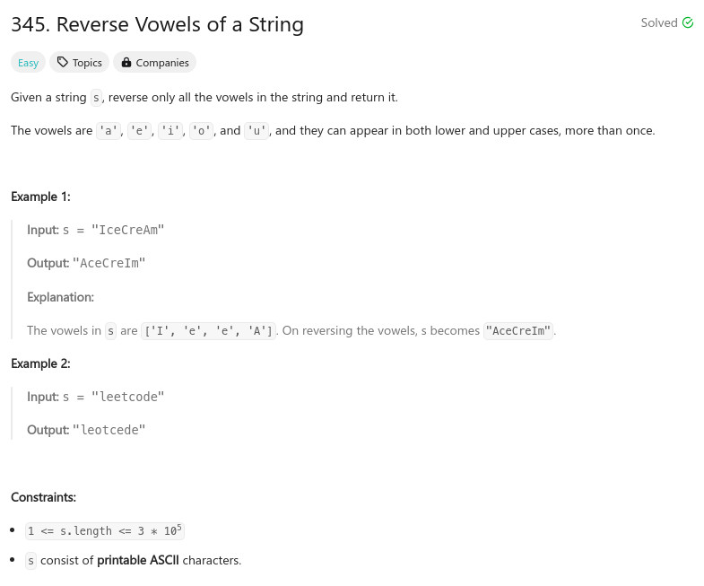

題目：

int is_vowel(char ch)
{
if ((ch == 'a') || (ch == 'A') ||
(ch == 'e') || (ch == 'E') ||
(ch == 'i') || (ch == 'I') ||
(ch == 'o') || (ch == 'O') ||
(ch == 'u') || (ch == 'U'))
{
return 1;
}
return 0;
}
char* reverseVowels(char* s)
{
int cc = 0;
int idx = 0;
int len = strlen(s);
char *v = malloc(sizeof(char) * len);
idx = 0;
for (cc = len - 1; cc >= 0 ;cc--) {
if (is_vowel(s[cc])) {
v[idx++] = s[cc];
}
}
idx = 0;
for (cc = 0; cc < len; cc++) {
if (is_vowel(s[cc])) {
s[cc] = v[idx++];
}
}
free(v);
return s;
}